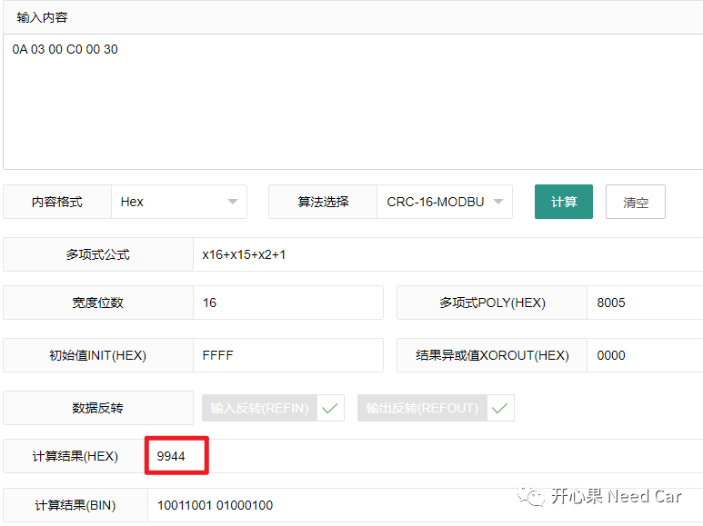
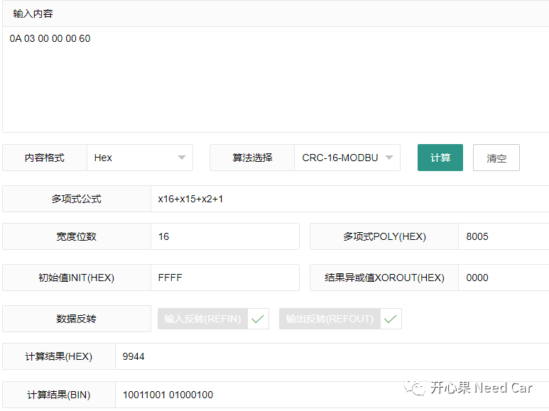
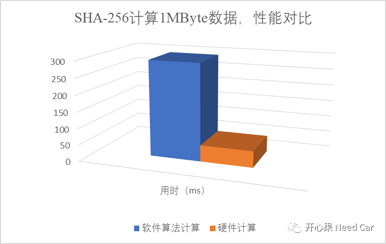

开心果 Need Car · 2023-11-10T07:14:00+08:00 · 微信原文
在汽车嵌入式领域，信息正确传输是一切功能实现的前提。所以，如何确保数据传输的完整性，人们煞费苦心。为了确保数据传输的完整性，人们想到了很多方法：奇偶校验、校验和、MD5、CRC(Cyclic Redundancy Check，循环冗余校验)等等。如上算法，由于实现原理不同，使得校验准确性也存在一定差异，比如：奇偶校验可信度差不多50%，CRC校验虽然可靠，但也不能做到100%。对于整车通信，尤其关键控制器之间的数据通信，对于数据准确性要求很高，数据稍有偏差，即可带来不可预期的安全风险。
1、CRC计算结果可信度
CRC计算，虽然在工程中的使用率很高，但是，并不意味着它是安全可靠的，如上已经提到，CRC计算结果的准确性本身不是近乎100%，存在一定的偏差，计算对比如下：
1、使用CRC-16-MODBU计算0x0A 0x03 0x00 0xC0 0x00 0x30，计算结果0x9944，如下所示：

2、使用CRC-16-MODBU计算0x0A 0x03 0x00 0x00 0x00 0x60，计算结果0x9944，如下所示：

如上计算，即使输入信息不同，也计算出了相同的结果，这说明CRC的检错计算不能保证数据传出的完整性。CRC在线计算网址：
https://www.lddgo.net/encrypt/crc
2、SHA
工程上，用到的哈希算法一般有：MD5、SHA-1、SHA-224、SHA-256、SHA-512等。如上算法，生成的摘要长度不同，MD5可生成120bit摘要信息，SHA-1可生成160bit摘要信息，SHA-224可生成224bit摘要信息，SHA-256可生成256bit摘要信息，SHA-512可生成512bit摘要信息。生成的摘要信息越长，对应的算法安全度越高，即：数据完整性检查更可靠。其中，MD5已经被攻破。
在工程中，常用SHA-256对软件模块进行完整性校验，所以，对比一下CRC-16-MODBU，再次计算如上信息，验证其可靠性。
1、使用SHA-256计算0x0A 0x03 0x00 0xC0 0x00 0x30，计算结果：
4098d69ecfef83dbe7954a1768e112e17dd182392410a2c56704ff6511b4bcd02、使用SHA-256计算0x0A 0x03 0x00 0x00 0x00 0x60，计算结果：
ae6ce7f1ed26fba831197cd6b522ad0f719f23306513646fc8fa6a18f3d4b360计算网址：https://md5.cn/tool/hash?id=1
可以看出，SHA-256计算结果相对CRC计算，更可靠。
（一）SHA-256
对于任意长度的消息，SHA-256都会生成一个256位的哈希值（消息摘要）。所以，使用SHA-256计算软件块完整性，会得到一个32Byte长度的哈希值（Hash Value），之后对此哈希值（摘要）进行签名。
目前，SHA-256除了软件实现，一些芯片硬件模块也支持，eg：TC3xx等。提到这，可能不禁要问一个问题：为什么要硬件实现SHA-256呢？答：速度。对于汽车MCU级别芯片，CPU的主频和处理能力毕竟有限，如果再去计算哈希值，势必大大延长软件的启动时间，影响软件运行的实时性。
那么，SHA-256在软件算法和硬件上的实现，性能差别有多大呢？笔者做了一个实验，对比如下（取10次计算平均值统计）：

往期精彩回顾
CAN FD通信：数据段错误，错误帧的速率是500Kbps还是2Mbps？